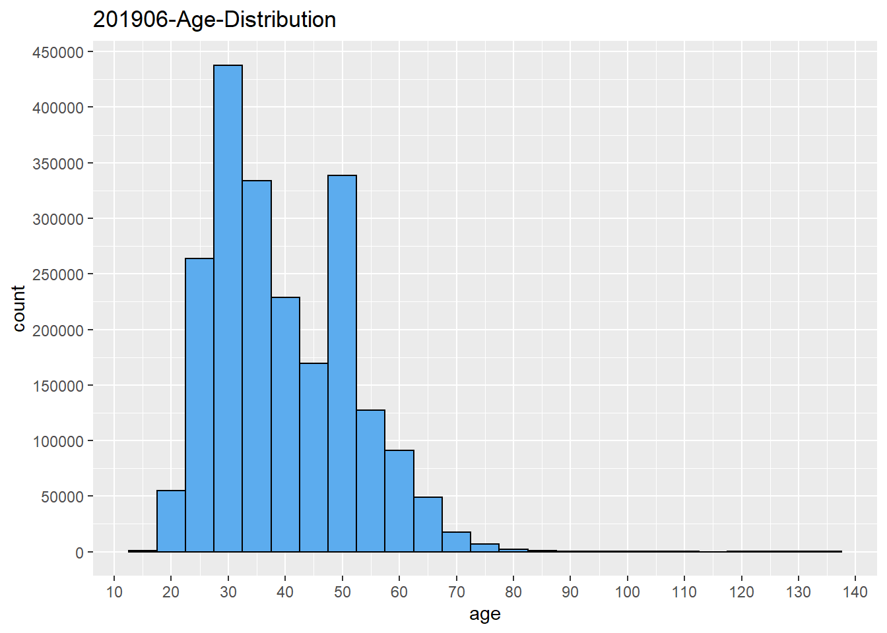

Chapter 5 Results
5.1 The Membership analysis (Age, Gender, Annual memberships or Subscriber)
1.Color Palette
First, we carefully pick our color palette for plots in this project, to make it consistent with company brand. The base colors for Citibike is blue and red.
Color patette chosen are steelblue series and indianred series.
2.Age/gender vs bike usage
We care about how gender and age affect the bike usage, what’s the difference betwwen each group and what kind of patterns there. Also, we want to see if there are any changes among years. Two facet line charts were created based on total number of trips and average duration of trips.
Three features were considered, age, gender and year


Note: For 2020, data was collected from January to October
We can clearly see some patterns from above two plots.
1) Males made more trips than females amnong almost all age levels. Without checking the accurate number, it looks like males have more than twice of the total trips made by females
2) Total trips increases before age 30, but decreases after that, both males and females have total trip peaks around age 30. Young people tend to use bikes more.
3) In terms of average duration,females tend to have longer trip duration then males. It makes sense as in general, makes ride faster then females.
4) An interesting thing is that below age 65, the average duration is very stable for both male and female, between 10 and 20 minutes, but after age 65, it varies much. We can think about people may use bike a lot for daily commuting purpose on Mahattan. But after retirement, people bike for different reasons, maybe for exercise or for short trips.
5) Another thing is that the average duration in 2020 seems longer then previous years. Probably people who need to go outside reduce the use of public transportation, and ride bikes more to get to destination
6) Finally, we think in general there is slight but not that significant pattern changes in year 2020 based on age and gender.
3.Membership types vs bike usage We want to look into more details to check if user behavior differs among age, gender and year. There are two Membership types, pass user and subscriber. We want to see which one peple use more. Two plots made here, one is stacked bar chart to show the total numbers, another one is mosaic plot to understand the association among variables, mainly gender and age in diferent years.
Ages were binned into categories for analysis.

Note:
1) Customer = 24-hour pass or 3-day pass user; Subscriber = Annual Member
2) For 2020, data was collected from January to October
We have some findings below.
1) We found in both bar chart, for different age bins, age 45-54 tend to have the highest percentage of customer type, followed by age below 35 which have relatively higher percentage of customer type. While age 35-44 users and age higher then 55 users tend to have more subscribers.
2) We have some doubts for age 45-54, and curious why this age bin have the highest customer type. This question may be answered by mosaic plot.
3) Another thing we can tell from the plots is that due to covid-19, the percentage of customer increased, people work from home and stay at home may cancel the annual membership. But in general, the usage doesn’t drop largely.
 An interesting thing is that for gender ‘unknown’, age 45-54 occupies the lagest portion and membership type ‘customer’ is the main type in this bin, which is very different from other catergories. We cannot find a good reason for this abnomality, and guess when people create new profile, they don’t want to input the true information and keep the default settings, especially for membership type ‘customer’, who care more about to use bike as soon as possible.
An interesting thing is that for gender ‘unknown’, age 45-54 occupies the lagest portion and membership type ‘customer’ is the main type in this bin, which is very different from other catergories. We cannot find a good reason for this abnomality, and guess when people create new profile, they don’t want to input the true information and keep the default settings, especially for membership type ‘customer’, who care more about to use bike as soon as possible.
For this strange pattern in unknown category, we will focus more on male and female categories, and filter the data for gender unknown for further analysis.

 Note:
1) The plot should show the fill in color for the last cut - usertype, but it’s not working here.
Note:
1) The plot should show the fill in color for the last cut - usertype, but it’s not working here.
2) In order to show more clear plot, we made the first cut horizontally
Mosaic plot mainly show the proportion and association for gender, age and usertypes. The patterns are now more clear then stacked bar chart.
1) For both male and female, yonger ages tend to have more customer type, while elder people tend to have more subscribers. We guess elder people may have more fixed pace of life and commute between home and workplace daily; and for age higher than 55, those people may bicycle for exercise and healthier life style.
2) We don’t see much difference for usertypes in terms of age and gender.
- Same thing we can tell from mosaic plot, due to covid-19, the percentage of customer increased
5.2 Time Series on Bike Usage (2018 -2020)
Question 1: How does number of trips differ by years from 2018 to 2020? How is it affected by COVID-19? Is there any trend?
From the time series line graph, we can see that the trends in 2018 and 2019 are quite similar. Both of them started to increase in Feburary, reached a relatively high level from May to October, and started to decrease as winter came. In 2020, due to COVID-19, there was a sharp decrease in April 2020. However, surprisingly, the number of trips began to increase right after April, and followed the same pattern as it was in previous years. Based on COVID-19 safety instructions, people should avoid outdoor activities and interaction with people, but it seems that citizens in NYC are not following these instructions, and that is why COVID-19 is still a big problem in NYC, or even in the entire US.


5.3 Weekday/Weekend Usage
Can we extract any pattern for trips during weekdays and weekends? What time in a day are bikes used most frequently?
Here we created bar chart analysis for hourly bike usage by weekdays and weekends. We can see that during weekdays, there are 2 peeks. In the morning, the peek occurs at 8 o’clock, when people are busy getting to their workplace. In the afternoon, the peek shows up at 17 and 18 o’clock, when people just end their work and start to get back home. During weekends, we can see that the number of trips almost follows a normal distribution, where it reaches its peek at 15 o’clock. Such trend occurs probably because most people are using Citi bikes for sightseeing during weekends. Combined with other data (for example, data of user info), we might be able to determine the proportion of people that mainly use Citi bikes for work, and thus modifying the bike deployment or the location of bike stations accordingly.

5.4 Temerature affects on the Bike usage
In this section, we will analyze the bike usage from temperature perspective. Trips are bellow 1 Million if the temperature bellow 45 degrees in 2018 and 2019, then every temperature goes up 10 degrees, the average usage goes up 0.5M. Only 2020 is an exception, we see a huge decrease from 45 - 55 degrees in 2020. I have did the analysis, usually March, April and May as average monthly temperature between 45 - 55. During this time, New York City takes very strict lock down policy. The New York State governor closed all the restaurants, gym, public parks and sports fields to prevent the spread of corona virus. Then the ride usage bounce back on Jun and July since the lock down policy has been released. With the summer approaching, the usage backs to normal level as 2018 and 2019.
From the analysis, we can the best weather to take a ride would be 65 to 75 range, there are around 2Million people would choose Citibike over taking cars or subways in New York City. Let’s go to take a ride on the Citibik when the weather is nice!

5.5 Bike Users’ route pattern(How people use it as the commute tool)
- First, we took the data from Citibike official website, there are station location which can be mapped to different counties, we picked all the stations in Manhattan, Queens, Brooklyn as our main target to analyze the route pattern for riders. There are over 1.6 Millions residents in Manhattan, we can see 8 am - 10 am and 5 pm - 7pm are the peak hours for bike usages, average bike trips are over 100K times.It shows there are around 10% of Manhattan residents are using Citibike for their commute.2018 and 2019 has the same pattern, but 2018 the trip numbers drops to around 50K in morning rush hours, this is largely caused by COVID -19 pandemic, which companies require employee to work from home and the city implement lock down policy starts from end of March 2020 to July 2020. Majority of bike trips happen within the Manhattan, we want to analyze the cross-borough bike usage, we need to drop the Manhattan trips and analyze the Manhattan to Queens and Manhattan to Brooklyn trips, which will display in the next plot.

- Manhattan to Outers From the pattern we can see, in the morning few people will take the bikes but in the afternoon, there are average 6K trips each day. People tend to take other transformations for going to queens and Brooklyn and coming back to Manhattan with bikes. One interesting point is the morning bike usage doubled in 2020, the average bike usage around 10AM is 1k in both 2018 and 2019 but it is 2K in 2020. This can be implied that people try to take social distance and avoid taking subway or bus for their commute and choose to ride bikes instead.

- Queens to Outer Very few people take Citi bikes in Queens since there are fewer bike stations in Queens. It still worths us to take a look on riders’ pattern. In the morning rush hours, there are around 700 riders take bikes as their way to Manhattan and 200 riders to Brooklyn for both 2018 and 2019. Things change a little bit in 2020, there are around 1000 riders take bikes to Manhattan, 400 riders to Brooklyn. Rider numbers almost doubled in 2020. It has the similar pattern as people live in Manhattan and go to Queens or Brooklyn in the morning. Due to pandemic and social distance advocate, people in New York city tend to ride more bikes than usual to avoid taking subways or buses in the morning rush hours.

- Brooklyn to Outers Brooklyn has a different story compare with their peers in Manhattan and Queens. In 2018 and 2019, more people take bikes to go to other counties with average 6500 trips in the morning rush hours, it dropped to 3000 trips in 2020. I performed a deeper analysis on Brooklyn residents. Most of those trips between Brooklyn bridge and lower Manhattan, since a lot of financial companies are taking strict work from home policy. It explains why riders reduce so many between Brooklyn and Manhattan but not many changes between Brooklyn and Queens.